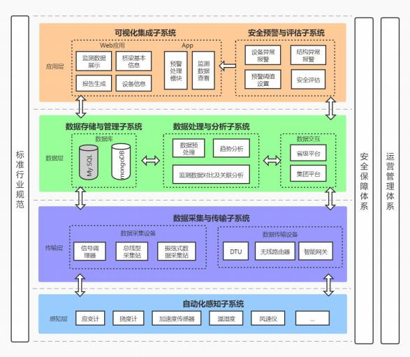

| 通过时间 | 抓拍车牌 | 车型/轴数 | 实测总重 |
|---|---|---|---|
| 16:58:22 | 冀F·9B812 | 集装箱 (6轴) | 42.6 t |
| 16:57:45 | 京A·D0328 | 重型自卸 (4轴) | 58.2 t [超限] |
| 16:56:10 | 冀F·K7611 | 标准厢货 (2轴) | 12.4 t |
| 16:55:04 | 津C·39A21 | 危化品罐车 (5轴) | 38.9 t |

重大工程结构智能监测与全寿命健康运维系统
面向桥梁、超高层、大跨度市政基础设施，构建“端—边—云”四层协同架构与六大子系统。融合力学机理与深度学习算法，从“事后抢修”跃迁为“事前预防、事中可控”，为国家关键基础设施提供全天候感知、精准预警、科学评估与全寿命数字化档案。
从“事后抢修”升级为“事前预防、事中可控”
解决传统人工巡检覆盖面窄、间断性强、隐患难捕捉的痛点，以数据驱动实现科学决策。
- ⚠️ 巡检周期长且间断： 依赖人工经验，逢雨雪恶劣天气无法开展，突发病害难捕捉。
- ⚠️ 受力与变形不可视： 无法连续获取动应变、斜拉索内力、微振动等内部力学关键响应。
- ⚠️ 数据碎片化严重： 纸质巡检记录归档困难，缺少结构全寿命期数字化退化档案。
- ⚠️ 被动处置成本高昂： 病害暴露往往已恶化至不可逆损伤，不得不中断交通进行大范围抢修。
- ✨ 全天候自动化感知： 24小时连续在线监测，环境作用与结构微小变形秒级敏锐捕捉。
- ✨ 力学映射与闭环研判： 遵循“环境—作用—响应”逻辑，多级阈值自动规则判级与派单。
- ✨ BIM+GIS 数字孪生： 一张图直观统管桥梁、测点、实时状态与空间退化推演。
- ✨ 全寿命数字化档案： 长期数据画像支撑预防性科学养护，有效延长工程使用年限。
“端—边—云”四层架构与六大子系统
分层解耦、模块化设计，实现多类型异构传感器同步高精度采集与云端集成分析。

平台层（云端智能与可视化）
数据存储管理、深度力学处理分析、安全预警与 BIM+GIS 数字孪生可视化集成，统一对外提供 Web/APP 双端服务。
传输层（高可靠加密通信）
光纤专网 / 5G / 4G 多链路互备，采用 HTTPS 传输加密与动态密钥认证，保障数据高质量、毫秒级低时延回传。
边缘层（边缘计算预处理节点）
现场智能网关与分布式采集站，支持本地信号滤波清洗、同步与时序存储；断网可离线缓存 ≥180 天，恢复后自动续传。
感知层（工业级全息传感网络）
布设静力水准仪、光纤光栅、超声波风速仪、MEMS加速度计、北斗GNSS等传感器，在线精准拾取关键部位力学信号。
自动化感知
多类型工业级传感器同步高精度采集结构信号。
数据采集与传输
边缘预处理、断网续传、多链路安全回传上云。
数据存储与管理
数据清洗、同步与时序存储，建立全寿命档案。
数据处理与分析
特征提取、趋势分析与结构异常特征识别。
安全预警与评估
多级阈值判级、规则研判与结构健康度评估。
可视化集成
BIM+GIS 数字孪生一张图与 Web / APP 双端服务。
监测内容：环境—作用—响应全覆盖
依据 JT/T 1037-2022，监测内容覆盖环境、作用与结构响应三大类，典型配置如下。
| 监测类别 | 监测项 | 典型设备 |
|---|---|---|
| 环境与作用 | 温湿度、风速风向、地震动、车辆荷载 | 气象站、三向加速度计、称重设备 |
| 结构变形 | 挠度 / 沉降、桥塔 / 梁体位移、支座位移、倾斜 | 静力水准仪、GNSS、拉线位移计、倾角仪 |
| 结构受力与振动 | 应变、索力、主梁与拉索振动 | 光纤光栅应变计、加速度计、磁通量传感器 |
| 表观与视频 | 裂缝、锈蚀、异常事件、车牌 | AI 高清视频监控 |

全要素工业级传感器矩阵库
覆盖“环境—作用—响应”全部监测要素，统一选型标准，兼顾长期服役稳定性与高测量精度（点击卡片查看详细技术路线）。
“力学机理 + 数据驱动”核心科研壁垒
沉淀于自主可控科研成果，在国际顶级力学与结构健康监测期刊发表系列 SCI 论文，形成坚固技术壁垒。
规范互联与网络安全保障体系
网络安全等级保护二级认证，提供 IPSec / SSL VPN 专线与多层纵深安全防护。

标准化接口与集约化桥群纳管
1. 遵循标准： 严格遵照交通运输部 JT/T 1037-2022 标准化数据字典与接口协议；
2. 桥群互联： 单桥系统支持无缝融入路段级、集团级乃至省级桥群监测监管大平台；
3. 纵深防御： 网络安全等级保护二级，基于 IPSec / SSL VPN 专线，HTTPS 加密与动态秘钥认证，操作日志全程可审计。
| 工单编号 | 监测工程 | 报警测点 | 预警等级 | 触发瞬态值 | 发生时间 | 流转阶段 | 责任人 | 操作处置 |
|---|
综合评估结论：A级 (良好受控)
基于长期累积监测大数据与结构基准模态反演，当前结构变形稳定性、斜拉索索力均匀度及动力特性均在规范容许区间，未出现渐进性累积损伤。
重大工程落地案例与实测成效
已成功应用于国内多座特大型斜拉桥、转体斜拉桥、超高层地标及跨渠连跨桥群，经过工程实测全面检验。